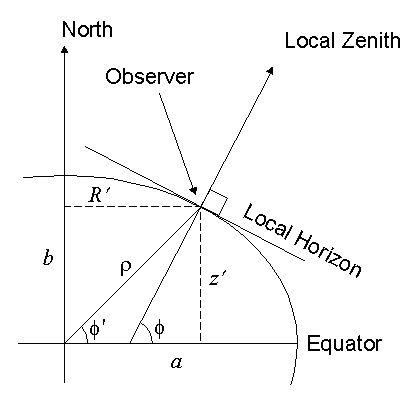

Rob Rhinehart
A portrait of the engineer as a young man

A Live WebGL Artificial Satellite Tracking System
I got my amateur radio license today! The test was a breeze; just barely missed a perfect score. For the past several weeks though I have been interested in satellite communication. I plan to build my own antennas and transceivers but first I realized it can be hard to keep track of exactly where the satellites, or 'birds' are. There are some resources online but I figured I could do better, and it would be a great chance to learn WebGL (a subset of OpenGL) and get in to some awesome scientific computing and simulation (what I really like to do).
The bad news is I got to start by porting FORTRAN IV written in 1980 to javascript. I thought about doing it server side in python but wanted to see how javascript handled the heavy mathematical lifting. So far it's run great in chrome and firefox! It's amazing how far javascript engines have come in just the past decade.
The file predict.js takes a TLE (Two Line Element set) and produces current position and velocity at an error of ~1km at epoch and an additional ~1-3km per day. It's amazing to be able to get such accurate simulation data from such little information, but it requires a very detailed physical model.
I used the models detailed by Hoots and Roehrich here (pdf). It's a lot to digest at once but T.S. Kelso has a great breakdown on his site celestrak.com/columns (originally pubished in Satellite Times from 1994-1998). The SGP4 models the earth as an oblate spheroid:
For now I have the SGP4 model implemented and the TLE of the ISS (International Space Station) tracking with a basic WebGL interface. The satellite for now is just a box. WebGL has not yet reached standardization and as such there is not a good, standards-compliant way to represent a complex model or make one in a common 3d CAD program. However, it is quite precise and everything except for the size of the satellite is to scale. You can see the sun and the moon in the distance. The moon rotates and revolves around the earth in real time. You can speed up the simulation though to see the effects better. The sun is also to scale but it's of course hard to get an idea of how large it really is from that distance. You can move the camera with your mouse and scroll wheel.
Much more to come! For now you can check out the demo here.